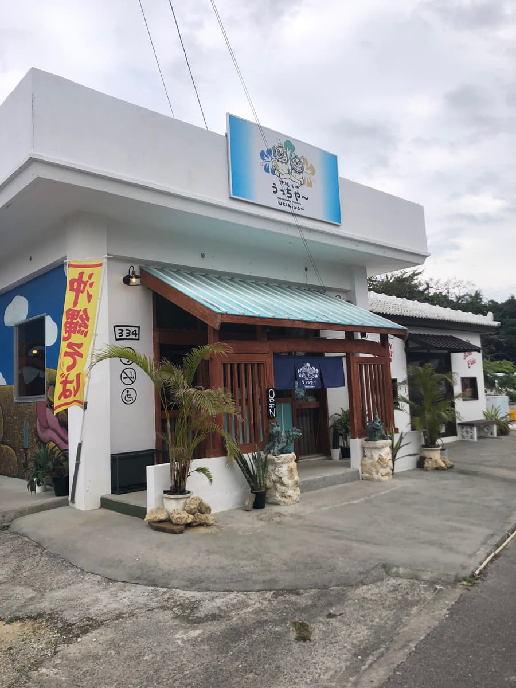
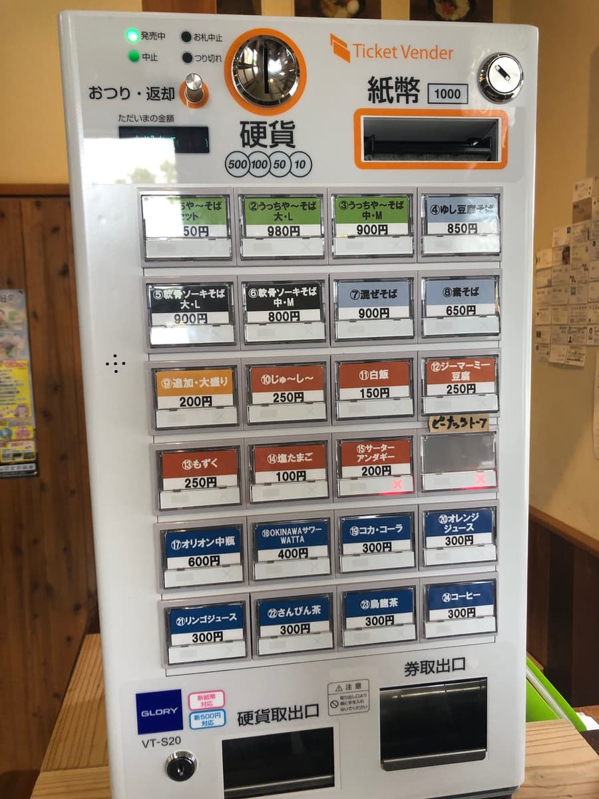
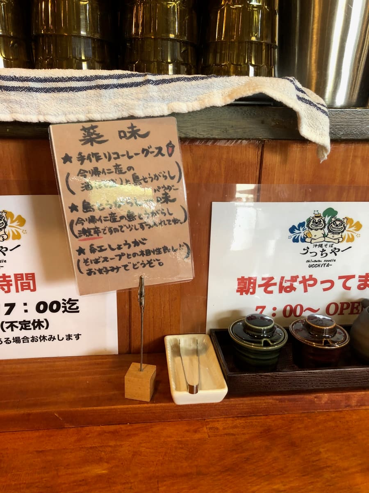
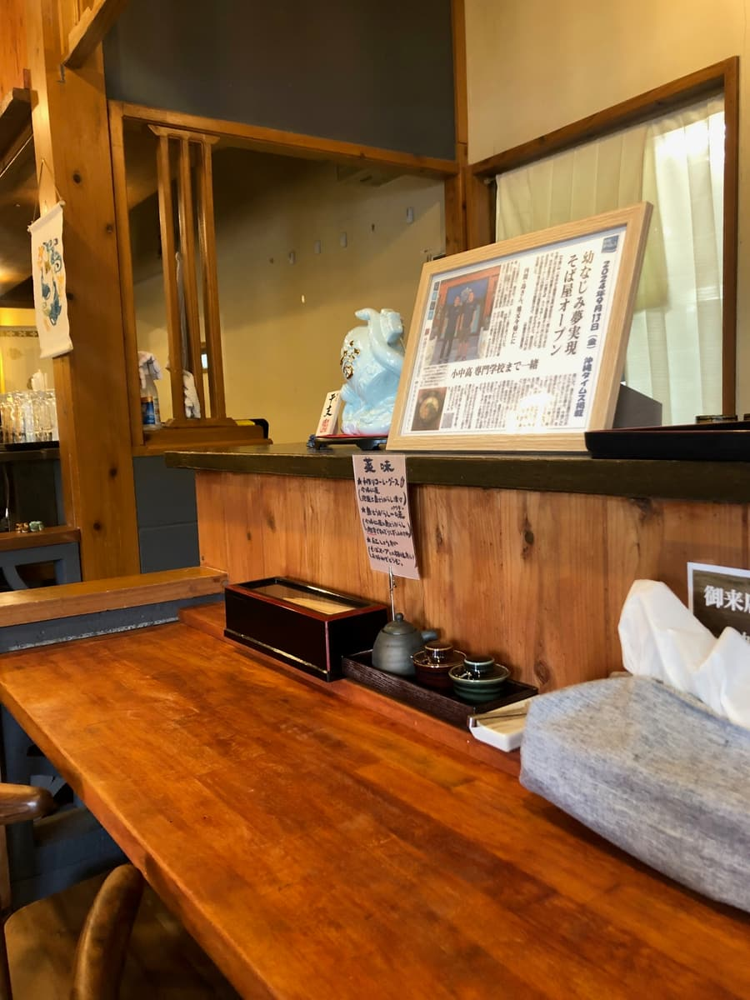
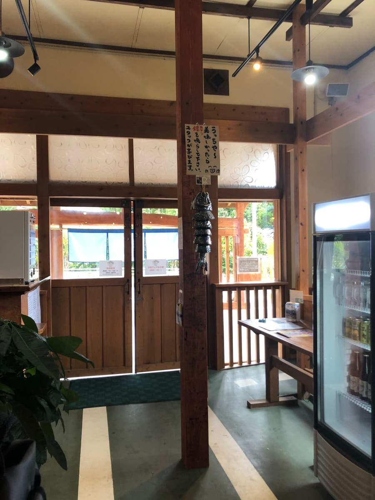
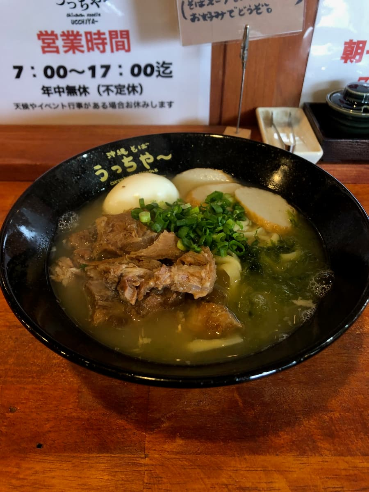
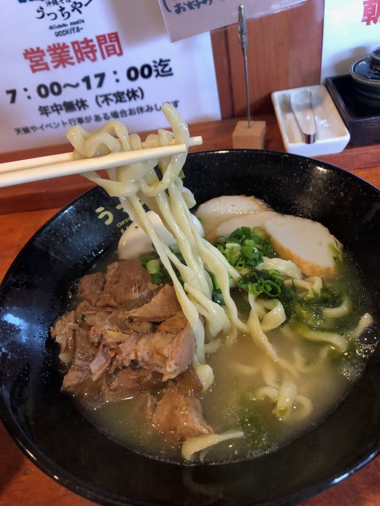
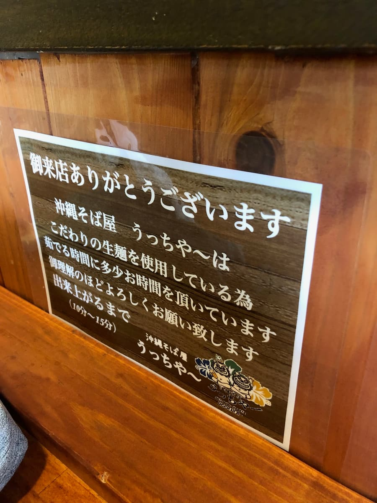
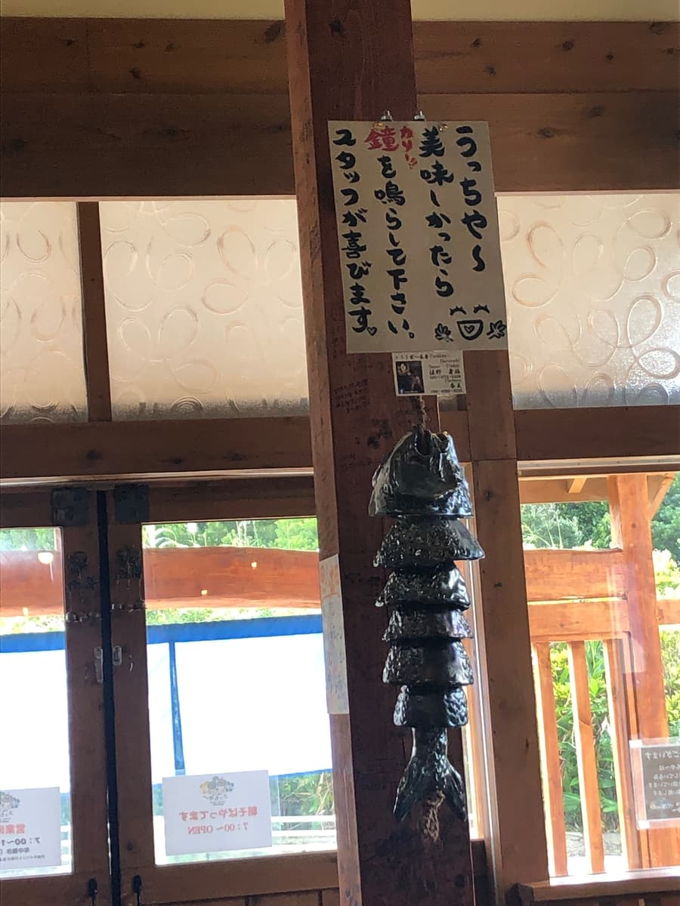

※這篇文章是用AI（Claude Haiku 4.5）生成，再由我補寫更新一部分完成的😆
2025年1月去吃的😁😊
這次造訪了今歸仁村仲尾次的「烏恰」。這間店其實從早上7點就開始營業，能吃到早餐沖繩麵是它的一大特色。

在本部半島地區，從早上就能享用沖繩麵的店意外地很珍貴。外觀是以白色為基調、很有沖繩風格的可愛建築，木製的暖簾是標誌。造訪的時候是中午過後，在地客人和觀光客恰到好處地混在一起，飄散著充滿活力的氛圍。




店內是大量使用木頭的沖繩傳統建築，有吧台座位也有和式座位，是能沉穩地享用沖繩麵的環境。因為是用售票機點餐的系統，既保有在地店家的氛圍，又能順暢地點餐，印象很好 ✨ 這次吃的是「烏恰麵」。

一碗麵擺在眼前，柴魚高湯湯頭的香氣舒服地擴散開來。鹹味也很明確，絕對不清淡，反而有恰到好處的層次感。是一碗平衡很好的美味湯頭 🎯


麵用的是講究的生麵，是中粗扁平麵這種很有特色的形狀。Q彈的口感很舒服，跟湯頭的融合度也超群。嚼勁也確實保留著，與其說滑溜，不如說是Q彈的獨特口感讓人印象深刻。這個麵的質感，確實跟其他店有不同的個性，很不錯 👍
來看看配料，有軟骨排骨、半熟蛋、蔥，還有雖然量少但有加石蓴（海苔）。軟骨排骨的醬油底味道確實滲進去了，也能感受到甜味。不過，筋感還留下不少，雖然很有咬勁，但也有一些部分有點在意纖維感。半熟蛋是在其他店不太常看到的配置，雖然石蓴量少但也有加，是很有沖繩麵風格的好成品。
很多在地客人來訪這件事，說明了這間店的高品質。觀光客也恰到好處地來店，飄散著在地人和觀光客平衡良好的好氛圍。然後有趣的是，離開店的時候，為了傳達「很好吃」的心情，有敲響店內鐘的習慣😅

這是很少見的安排，我覺得是表達吃完後滿足感的很棒的機制。最重要的是，從早上7點就開始營業這點是一大重點。對於觀光想從清晨就開始行動的人來說，能吃到受在地客人喜愛的早餐沖繩麵，是其他店沒有的優勢。排進本部半島地區的觀光路線，就能實現更充實的沖繩麵巡禮。
評分（10分/15分）：我覺得是在本部半島地區能讓人感受到上位等級美味的店。還有也營業早餐沖繩麵這種少見的特色，覺得是值得一定要來一次的店。想從早上就沉浸在沖繩麵魅力中的人，請一定要來看看喔 🍜
麵：★★★✬☆（3.5）
湯頭：★★★✬☆（3.5）
配料：★★★☆☆（3）